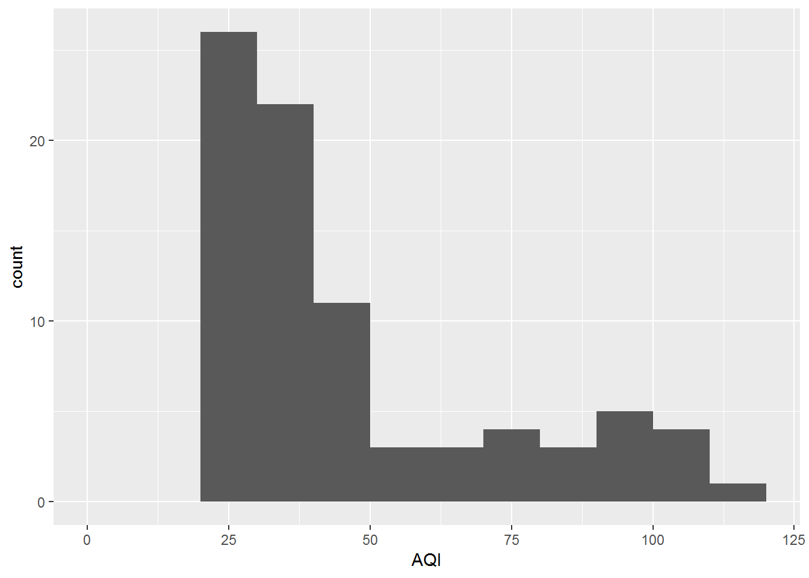
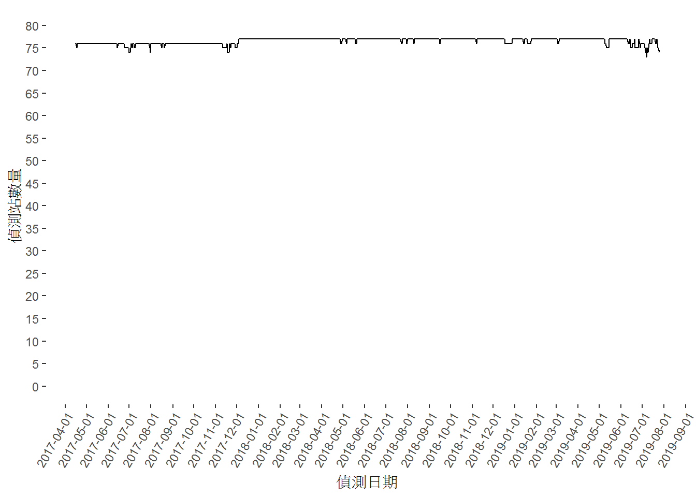
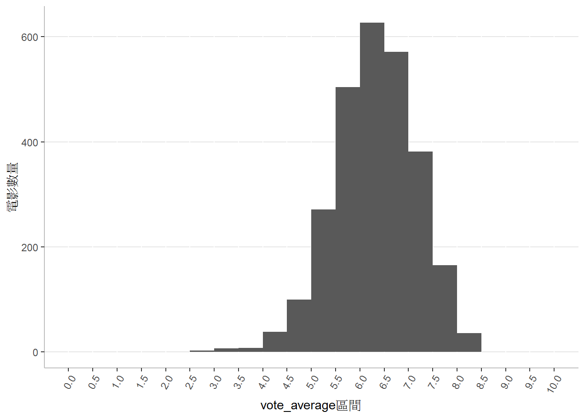
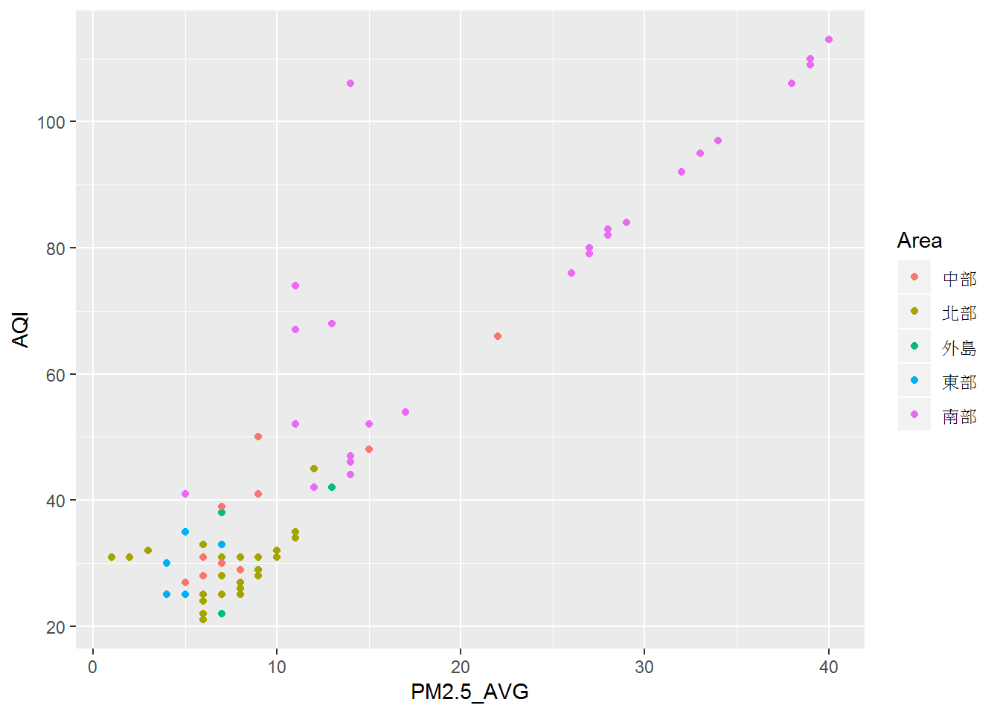

Chapter 4 資料視覺化
課程簡介
課程簡介
本次課程的目的為介紹R語言上主要的資料視覺化工具– ggplot2。本次課程將以空氣品質指標資料為例，探討資料視覺化的過程。包括以下的內容：
- 資訊視覺化簡介
- R語言的資料視覺化工具: ggplot2
- 以資料視覺化的方式進行資料探索
學習目標
- 能夠說明在資訊視覺化中各種圖表類型適合的應用問題
- 能夠將輸入的資料檔案轉換成可以進行視覺化的形式
- 能夠利用ggplot2 套件進行資料視覺化
4.1 資訊視覺化簡介
資料視覺化是以適當的圖形表現出資料中蘊藏的資訊，以便透過視覺的方式了解資料的意義，進一步深入問題。
進行資料處理與分析可以分為5個步驟：
- 問題擬定
- 資料取得
- 資料清理
- 資料分析
- 結果解釋
其中的第4和第5步驟都可以進行資料視覺化。在第4步驟中，可以利用資料視覺化進行資料的探索分析，概觀資料的樣貌，擬定相關資料模型。第5步驟則是在對外說明時，利用圖形增強研究結果說明的印象和效用。
4.1.1 視覺化的應用
常見的視覺化應用問題可以分成以下五類：
- 分布(distribution)：某一數值資料的散佈情形
- 觀察重點： 最大值、最小值、集中化、異常
- 比較(comparison)：比較某一類別資料在其對應數值上的差異
- 觀察重點： 大小、順序、分布範圍
- 組成(compositon)：某一類別資料其對應數值的比例
- 觀察重點： 比例大小
- 關係(relationship)：某兩個數值資料之間的關係
- 觀察重點： 模式(是否呈現直線)、分布範圍
- 趨勢(trend)：某一數值資料對另一與時間有關的資料的關係
- 觀察重點： 成長或衰減、週期
這些問題可以組合，例如比較類別的分布
4.1.2 應用圖形呈現各種問題
具體來說，各項問題可以利用不同的圖形來呈現，例如：
- 分布：以直方圖表示某一數值資料的散佈情形
- 比較：以長條圖比較某一類別資料在其對應數值上的差異
- 組成：以圓餅圖表示某一類別資料其對應數值的比例
- 關係：以散佈圖觀察某兩個數值資料之間的關係
- 趨勢：折線圖觀察數值資料對時間資料的關係
- 比較+分布：以盒狀圖或小提琴圖比較某一類別資料其對應數值的散佈情形
綜合以上所說的，資料視覺化可以定義為：運用各種類型的圖表，以圖表上的位置、顏色、形狀、大小等視覺線索表現資料的分布、比較、組成、關係和趨勢，以便進行資料的分析，發掘資料蘊藏的訊息，同時也提供做為溝通說明時的輔助工具。
4.2 R語言的資料視覺化工具
ggplot2是R語言中常見的一個視覺化套件，提供一套標準圖表與資訊視覺化的語法和套件。
4.2.1 ggplot2的運作概念
- 找出資料中要分析的單元
- 將資料整理成data frame (或tibble)的格式，data frame上的每一個Observation，視為圖形上要呈現的單元
- 選擇data frame上需要對應到位置、顏色、形狀或大小等資料編碼方式的Variables
- 選擇圖表類型
- 設定各種資料編碼方式的表現樣式，例如座標的尺度、調色板等，
- 必要時調整圖形的座標類型、圖表層面和圖表外觀。
以下將上面的各個步驟對應到 ggplot2中的幾種函數與語法
- Data 資料來源
- Aesthetics 資料編碼：位置、顏色、形狀、大小
- Geometrics 圖表類型
- Scales 資料編碼的表現形式
- Coordinates 座標類型
- Facets 圖表層面
- Themes 圖表外觀
4.2.2 Aesthetics上幾種常用的資料編碼方式
x：x軸位置y：y軸位置color：點、線的顏色fill：填入的顏色size：大小linetype：線的樣式shape：點的樣式label：文字標示
4.2.3 ggplot2上幾種常用的圖表類型 (Geometrics)
geom_histogram()：直方圖geom_col()：長條圖geom_line()：折線圖geom_point(),geom_jitter(),geom_count()：散佈圖、點狀圖geom_boxplot()：盒狀圖geom_violin()：小提琴圖geom_area()：區域圖geom_tile()：方塊圖geom_text()：文字
4.2.4 使用ggplot2套件
ggplot2是tidyverse中包含的一個套件 可以使用library(tidyverse)載入，或單獨使用library(ggplot2)載入。
4.3 以資料視覺化的方式進行資料探索
以下利用空氣品質指標資料為例，說明以資料視覺化的方式進行資料探索的過程。
4.3.1 預備工作
- 以檔案總管在「我的文件」下的「rCourse」目錄內新增工作目錄「04」
- 開啟新的Script
- 設定工作目錄
setwd("rCourse/04")- 載入tidyverse套件
library(tidyverse)- 讀取空氣品質指標資料的CSV檔案
aqi_data <- read.csv(file="http://opendata.epa.gov.tw/webapi/Data/REWIQA/?$orderby=SiteName&$skip=0&$top=1000&format=csv",
fileEncoding="UTF-8-BOM",
stringsAsFactors=FALSE) # 讀取空氣品質指標資料6. 空氣品質指標的原始資料中只有偵測站所在線市資料，沒有地區名稱，因此將各縣市對應的地區資料county_area.csv下載到工作目錄「04」中
- 讀county_area.csv
ca <- read.csv(file="county_area.csv",
fileEncoding="UTF-8", stringsAsFactors=FALSE)
注意：county_area.csv與空氣品質指標資料的編碼方式不同，前者是UTF-8 without BOM，後者則是 UTF-8 with BOM
- 將地區資料加入空氣品質指標資料
aqi_data <- aqi_data %>% #利用兩個資料表都有County，連結兩個資料表
left_join(ca)## Joining, by = "County"- 去除AQI為NA的資料紀錄
aqi_data <- aqi_data %>%
filter(!is.na(AQI))- 將部分Character型態的資料欄位改成Factor
aqi_data <- aqi_data %>%
mutate(County=factor(County)) %>%
mutate(Status=factor(Status, levels=c("設備維護", "良好", "普通", "對敏感族群不健康","對所有族群不健康", "危害"), ordered=TRUE)) %>%
mutate(Area=factor(Area))4.3.2 問題
以資料視覺化的方式回答以下的問題：
- 全台各地空氣品質指標的分布情形為何？
- 各地區(北、中、南、東、離島)的觀測站數量為何？
- PM2.5指標與AQI之間的關係為何？
- 比較各地區的空氣品質分布情形
- 同時比較各地區觀測站測得的AQI、PM10與PM2.5等各種資料的分布
4.4 利用直方圖呈現資料的分布情形
要以資料視覺化的方式分析「全台各地空氣品質指標的分布情形為何？」，首先，判斷出這個分析過程中的單位是各地區的偵測站，觀測值則是空氣品質指標(AQI)。
接著，了解各地空氣品質指標的統計摘要。此處，利用統計摘要summary()描述資料分布，查看最大值、最小值與資料的分布區間。
aqi_data %>%
select(AQI) %>% # 選擇AQI值欄位
summary() # 對AQI值欄位資料統計摘要## AQI
## Min. : 21.00
## 1st Qu.: 29.25
## Median : 33.00
## Mean : 46.63
## 3rd Qu.: 53.50
## Max. :113.00- 初步繪製的圖形
資料分布一般可以採用直方圖(histogram)。ggplot2中，產生直方圖的圖表類型是geom_histogram()，並且將偵測站測得的AQI值對應到直方圖的x軸。
ggplot(aqi_data) + #以直方圖繪製AQI分布
geom_histogram(aes(x=AQI))
ggplot2的直方圖geom_histogram()，將x軸上的資料分為若干區間(例如：0~5, 6~10, 11~15, …)，預設為30個區間。
- 設置區間範圍
x_breaks <- seq(0, max(aqi_data$AQI, na.rm=TRUE)+10, 10) # 產生劃分資料的區間
x_breaks## [1] 0 10 20 30 40 50 60 70 80 90 100 110 120ggplot(aqi_data) +
geom_histogram(aes(x=AQI), breaks=x_breaks) # 設定直方圖的區間
- 加入X軸座標
ggplot(aqi_data) +
geom_histogram(aes(x=AQI), breaks=x_breaks) +
scale_x_continuous(breaks = x_breaks, minor_breaks=NULL)
- 修改與加入標題
ggplot(aqi_data) +
geom_histogram(aes(AQI), breaks=x_breaks) +
scale_x_continuous(breaks = x_breaks, minor_breaks=NULL) +
labs(x="AQI值", y="觀測站數",
title="觀測站測得的AQI分布圖")
練習
將直方圖的y軸座標(觀測站數)主要間隔設為1
所有的PM2.5資料分布情形
4.5 利用長條圖進行資料之間的比較
在分析「各地區的觀測站數量與比例為何？」時，分析的單元已經不再是個觀測站，而是各地區。因此，首先將資料整理成以地區為主的data frame。新的data frame上每一個Observation對應到一個地區，觀測的Variable便是它的觀測站數量。所以，先將aqi_data上的Observations，依據地區分類，統計各地區上的觀測站數量，形成新的data frame。
area_data <- aqi_data %>%
group_by(Area) %>%
summarise(count=n())- 初步繪製的圖形
一般可利用長條圖進行資料的比較，每一個長條代表要比較的單位，長條的長度則是單位上比較的觀測值。ggplot2的長條圖為geom_col()。我們以area_data做為資料來源，比較每一個地區的觀測站數量，將地區(Area)放置在圖形的x軸上，各地區的觀測站數量放置在圖形的y軸上
ggplot(area_data) +
geom_col(aes(x=Area, y=count))
- 加上排序的長條圖 上面的長條圖是依照地區的文字編碼進行排序，不容易一眼看出各地區偵測站數量的次序。因此，最好能將長條圖進行排序，使地區按照它們的偵測站數量由大到小排序。
ggplot(area_data) +
geom_col(aes(x=reorder(Area, desc(count)), y=count))
# reorder(x, y)： 依據y的大小，重新編排x的順序- 修改y軸上的標示
ggplot(area_data) +
geom_col(aes(x=reorder(Area, desc(count)), y=count)) +
scale_y_continuous(breaks=seq(0, max(area_data$count)+5, 5))
- 加上標題
ggplot(area_data) +
geom_col(aes(x=reorder(Area, desc(count)), y=count)) +
scale_y_continuous(breaks=seq(0, max(area_data$count)+5, 5)) +
labs(x="地區", y="觀測站數量", title="臺灣各地區的觀測站數量比較")練習
- 各地區觀測站數量占全台灣整體的比例
4.6 利用散佈圖呈現兩個數值之間的關係
分析「PM2.5指標與AQI之間的關係為何？」可以將每一個觀測站做為一個分析單位，也就是在圖形上為一個點，利用散佈圖(scatter plot)呈現這兩個數值之間的關係。
- 初步繪製的圖形
ggplot2中可以利用geom_point()畫出散佈圖。以aqi_data為資料來源，PM2.5指標為點的x軸座標，AQI為點的y軸座標。
ggplot(aqi_data) +
geom_point(aes(x=PM2.5_AVG, y=AQI))
- 以色彩區別不同地區的結果
ggplot(aqi_data) +
geom_point(aes(x=PM2.5_AVG, y=AQI, color=Area))
- 修改標題
ggplot(aqi_data) +
geom_point(aes(x=PM2.5_AVG, y=AQI, color=Area)) +
labs(title="PM2.5與AQI之間的關係", color="地區")4.7 使用盒狀圖比較多個群體的分布情形
前面在分析所有觀測站的空氣品質分布情形是使用直方圖，但如果要探討「各地區觀測站測得的空氣品質分布情形為何？」的問題，需要同時呈現多個分布，並進行比較。此時，便可以利用盒狀圖。每一個盒子代表一個地區，盒子中的橫線表示這地區AQI的中位數，上下緣分別代表第三和第一四分位數。盒子的高是四分位距，代表資料的分散程度，盒子愈高表示資料愈分散。盒子上下的直線外的點表示極端值或離群值。
- 初步繪製的圖形
要使用盒狀圖畫出各地區觀測站測得的空氣品質分布，可以利用函數geom_boxplot()，以aqi_data為資料來源，觀測站做為分析的單位，將觀測站所屬的地區做為x軸，AQI值則為y軸。
ggplot(aqi_data) +
geom_boxplot(aes(x=Area, y=AQI)) +
labs(x="地區", y="AQI", title="臺灣各地區空氣品質分布情形")
- 以不同的顏色呈現各地區的AQI分布
為了讓圖形較為美觀，以不同顏色呈現各地區的空氣品質指標分布。
ggplot(aqi_data) +
geom_boxplot(aes(x=Area, y=AQI, color=Area)) +
labs(x="地區", y="AQI", title="臺灣各地區空氣品質分布情形")
- 取消圖例(legend)
因為x軸已經標示出地區，圖形上的圖例(legend)顯得多餘，所以將其取消。
ggplot(aqi_data) +
geom_boxplot(aes(x=Area, y=AQI, color=Area)) +
labs(x="地區", y="AQI", title="臺灣各地區空氣品質分布情形") +
theme(legend.position="none")
4.8 利用並列的多個圖表進行比較
上面的[使用盒狀圖比較多個群體的分布情形觀測站]只比較各地區的AQI值，如果還要比較「各地區觀測站測得的PM10與PM2.5分布」，此時可以利用並列的多個圖表相同類型來呈現。
- 取出各地區觀測站測得的AQI、PM10與PM2.5，並從wide format改為long format
area_data <- aqi_data %>%
select(Area, SiteName, AQI, PM10_AVG, PM2.5_AVG) %>% # 取出地區、觀測站、AQI、PM10與PM2.5等資料
gather(key=index, value=value, AQI, PM10_AVG, PM2.5_AVG) # 從wide format改為long format- 利用圖表層面將各地區觀測站測得的AQI、PM10與PM2.5分布畫在並列的圖表上
盒狀圖類似上面的做法，但利用facet_wrap(~index)，將三種指標的盒狀圖並列
aqi_data %>%
select(Area, SiteName, AQI, PM10_AVG, PM2.5_AVG) %>%
gather(key=index, value=value, AQI, PM10_AVG, PM2.5_AVG) %>%
ggplot() +
geom_boxplot(aes(x=Area, y=value, color=Area)) +
facet_wrap(~index)
- 取消圖例
aqi_data %>%
select(Area, SiteName, AQI, PM10_AVG, PM2.5_AVG) %>%
gather(key=index, value=value, AQI, PM10_AVG, PM2.5_AVG) %>%
ggplot() +
geom_boxplot(aes(x=Area, y=value, color=Area)) +
facet_wrap(~index) +
theme(legend.position="none")
練習
- 將X軸與Y軸的標題改為中文，並加上圖表標題
小結
- 進行資料視覺化時，可以依據問題的類型思考運用什麼樣的圖表。適合進行資料視覺化的問題類型，包括分布、比較(或者進一步來說，排序)、趨勢、關係與組成。簡要來說，各種問題可以適用的圖表如下：
- 資料數值的分布情形： 直方圖
- x軸：數值資料
- 同種資料數值之間的比較： 長條圖
- x軸：類型資料
- y軸：數值資料
- 資料數值隨時間變化的關係： 折線圖
- x軸：時間資料
- y軸：數值資料
- 兩種資料數值之間的關係： 散佈圖
- x軸：數值資料
- y軸：數值資料
- 若有第三種以上資料
- 類型資料： 點的顏色
- 數值資料： 點的大小
- 資料分布的比較：盒狀圖、小提琴圖
- x軸：類型資料
- y軸：數值資料
- ggplot2畫圖步驟
data frame –> ggplot()的第一項
aes(x, y, color, fill, size)
geom_ –> 圖表樣式
scal_ –> 資料樣式
labs –> 標題
theme –> 圖表外觀
延伸思考
在Excel 上畫圖時使用的方式為wide format，但在其他繪圖工具時則是 使用long format，從你自己的觀察，就一般人的思考角度來說，兩者在使用上各有何優缺點？
就你自己的體會，當進行資訊視覺化的問題時，怎麼樣的進行步驟比較合適？